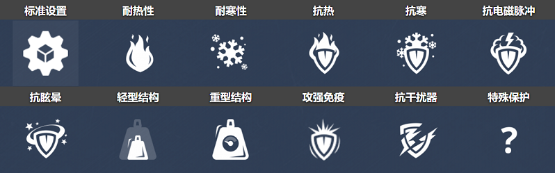

概括
“那边的瓦肯人不会停止给我挠痒痒的。” 被动战斗对于猛犸象来说算不了什么，这是一种以让玩家在附近时保持紧张而闻名的底盘。
众所周知，这些巨人既能用镭射炮从远处狙击目标，
又能在多边形中近距离和个人对抗CP 无处不在，
但你不太可能在比上述地图更大的任何地方找到一个使用基于接近度的武器的人。
三款重型底盘中的最后一款配备了偏离中心的炮塔，
猛犸也可以偷看角落并轰炸目标，但它永远不必担心因为显而易见的原因而被翻转甚至推搡：
它的重量、推力，并且绝对大小是游戏中最高的。这种底盘唯一真正的缺点是它的速度，
即使在启用速度提升的情况下，它的速度也慢得令人发指。
车库中的描述
沉重的底盘。大多数质量和稳定性。猛犸象的过速提高了它的速度，并赋予它致命的触感，可以杀死任何与它接触的敌人。
轨道上的移动堡垒。沉重的底盘中的旗手。
坚固的重物，由混凝土装甲加固，速度缓慢，
但能够同时在数个敌方炮塔的火力下生存。即使考虑到它令人印象深刻的厚度，
防御也不是这种船体的唯一功能。
由过速装置激活的特殊 AT 场将允许这头野兽穿过地雷和防护屏障，
同时轻松刷掉任何强度的敌人火力，并且对其装甲没有明显的影响。
它实际上是不可阻挡的，即使你用坦克挡住道路，它们也会成为猛犸象轨道上的额外金属层。
装备改造
过速装置
AT场
皮肤

猛犸象标准
猛犸象 XT
猛犸象遗产
猛犸象超高
猛犸象蒸汽朋克